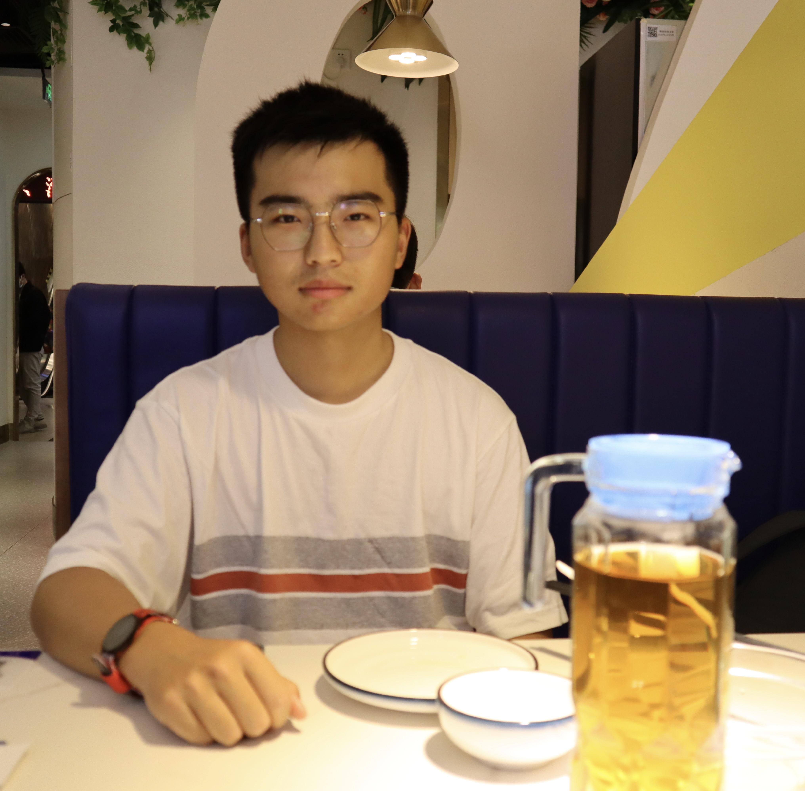
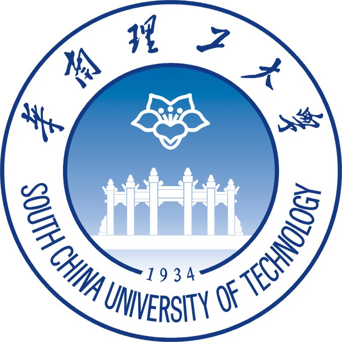

Yihang Zuo
|  | M. S. |
Education
|  | B. S. South China University of Technology (2019.9 ~ 2023.6)
|
M. S. The Hong Kong University of Science and Technology (Guangzhou) (2023.9 ~ Now)
|
Publication
A paper about AI accelerator
First author
Under the review of DAC 2025
OpenDRC: An Efficient Open-Source Design Rule Checking Engine with Hierarchical GPU Acceleration
Zhuolun He, Yihang Zuo, Jiaxi Jiang, Haisheng Zheng, Yuzhe Ma, and Bei Yu
ACM/IEEE Design Automation Conference (DAC), San Francisco, CA, 2023.[PDF]
Symmetrical indoor visible light layout optimized by a modified grey wolf algorithm
Yihang Zuo*, Bojun Liu, and Kunming Shao
Applied Optics (AO), 2022. [JCR Q1][PDF]
Analysis on Public Opinion Sentiment Evolution of COVID-19 Based on Weibo Data
JiangPing Wan, Xu Liu, Yihang Zuo, Jianfeng Luo
WHICEB 2021 PROCEEDINGS [PDF]
Honors and Awards
1st Prize in Guangdong province, China Undergraduate MCM 2020.10
1st Prize in South China, China college IC competition 2022.07
2nd Prize in Guangdong province, China Undergraduate MCM 2021.10
3rd Prize in South China, China college IC competition 2021.07
3rd Prize, China college IC competition 2022.08
Runner-up in the SCUT debate competition 2020.11
Meritorious winner, Mathematical Contest in Modeling (MCM) 2021.02
Experiences
Intern in Shanghai Artificial Intelligence Laboratory (Shanghai AI lab) 2022.09 - 2023.03
Summer Session of University of Illinois Urbana-Champaign (UIUC) 2021.08
Service and Leadership
Excellent Social Practice Volunteer
Senior Student Mentor
President of the Microelectronics Association